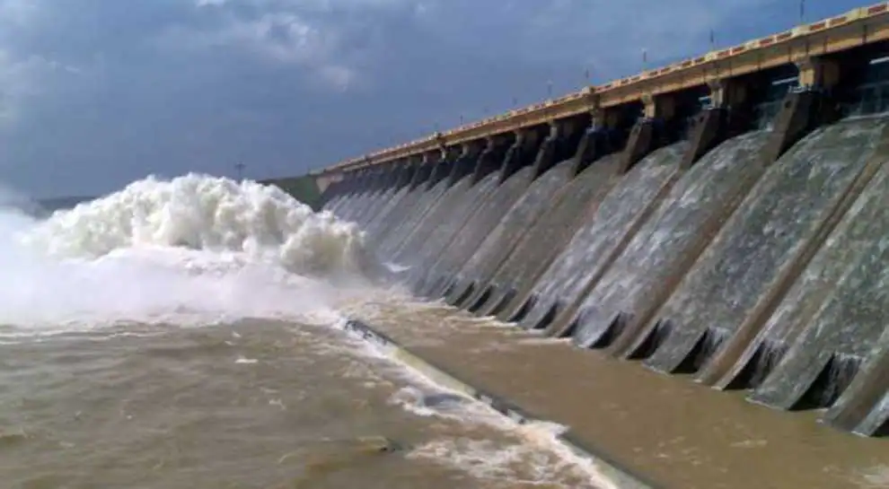

Farakka Barrage is a barrage across the Ganga river located in Murshidabad district in the Indian state of West Bengal.
Construction of the Farakka barrage started in 1962, was completed in 1970 at a cost of 15,34,52,20,800 rupees.
The barrage was constructed by Hindustan Construction Company.
The purpose of the barrage is to divert 1,800 cubic metres per second (64,000 cu ft/s) of water from the Ganges to the Hugly River for flushing out sediment deposition from Kolkata harbour without the need of regular mechanical dredging.
Beas Project
The Pong Dam, also known as the Beas Dam, is an earth-fill embankment dam on the Beas River in the state of Himachal Pradesh, India, just upstream of Talwara.
The purpose of the dam is water storage for irrigation and hydroelectric power generation.
Beas originates in Rohtang La
Hirakud Dam

Hirakud Dam Project is a multipurpose scheme intended for flood control, irrigation and power generation.
The dam is built across river Mahanadi at about 15 km upstream of Sambalpur town in the state of Odisha
The completed cost of the project is RS. 100.02 crores (in 1957)
The multi purpose Hirakud Dam project is the first stage of the plan of Dr. Ajodhya Nath Khosla, the then Governor of Odisha.